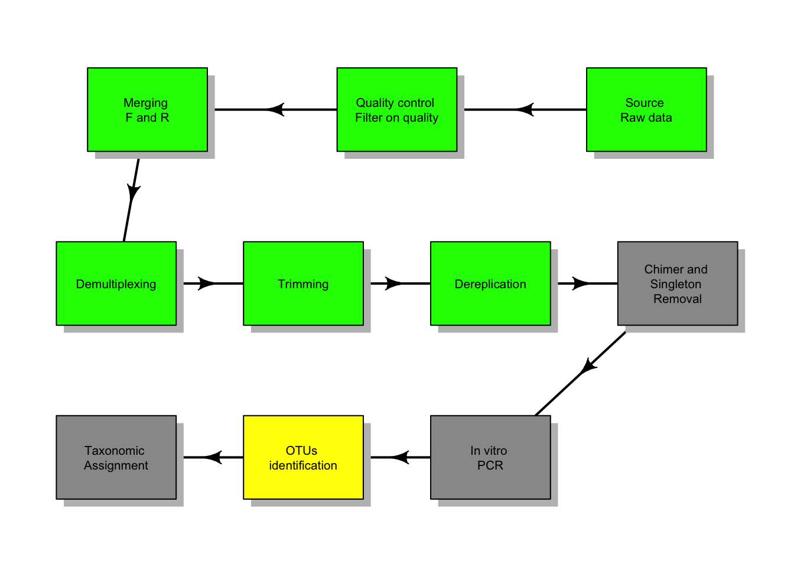

ngR
next-generation-R
Wouldn’t it be nice to analyse all your sequence data in R without having the need to use third party applications and/or code written in other languages? Yes, it would! In fact, there already are quite a few packages allowing the processing of your Next Gen Data.
This little project came about with the collaboration of Giulia Maiello, a PhD candidate working on some pretty cool stuff here at the university with me.
Lets say that we have some eDNA samples collected from dirt samples or some aquatic environment. One possible workflow to follow to analyse your reads is highlighted below.
Quality control
The first step is to check the quality of your reads. Lets not reinvent the wheel and use already existing packages to do the heavy lifting. The package Rqc works to our advantage. One of the advantages of this package is that it produces publication grade graphical output and gives interesting information on the quality of our reads (Souza, Sá Carvalho, & Lopes-Cendes, 2018).
I wrote a small function to automatically use the package main functions and extract the most useful quality information from our data. For convenience, the function can also check whether the package is already installed on the machine in use and, if not, it will install it for us (after kindly asking, of course). To arrange the output of the analysis in a nice way we also need to use the package gridExtra (Auguie, 2017).
The function has three main arguments:
- path_to_ngs_data = path where to find data to be analyzed;
- extension = extension of data to be analyzed (generally .fastq or .fastq.gz);
- path_to_save = path where to save reports and images. The function creates a .png image so only the path need to be specified
ngs_quality_control <- function(path_to_ngs_data, ext_pattern, path_to_save){
pck_lst <- list.files(.libPaths())
if ("Rqc" %in% pck_lst) {
library("Rqc")
print("Congratulations! Rqc is loaded and will now be used.")
} else {
print("Rqc is not installed. Do you want me to try and install it for you?")
answer <- readline(prompt = "Yes or No: ")
if (answer == "Yes" | answer == "Y" | answer == "y"| answer == "yes") {
if (!requireNamespace("BiocManager", quietly = TRUE))
install.packages("BiocManager")
BiocManager::install("Rqc")
library("Rqc")
} else if (answer == "No" | answer == "N") {
stop("Sounds good. You will need to install it yourself to keep going.")
}
}
# run the main function
library("gridExtra")
x <- path_to_ngs_data
y <- ext_pattern
z <- path_to_save
rqc_qa <- rqc(x, y, sample = F, n = 1e+06, group = NULL,
top = 10, pair = NULL,
outdir = tempdir(), file = "rqc_report",
openBrowser = FALSE)
p_01 <- rqcCycleAverageQualityPlot(rqc_qa)
p_02 <- rqcReadQualityPlot(rqc_qa)
p_03 <- rqcCycleQualityPlot(rqc_qa)
p_04 <- rqcCycleBaseCallsPlot(rqc_qa)
p_05 <- rqcCycleGCPlot(rqc_qa)
p_06 <- rqcCycleQualityBoxPlot(rqc_qa)
allplot <- grid.arrange(p_01, p_02, p_03, p_04, p_05, p_06, nrow = 3)
ggsave(allplot, width = 40, height = 30, units = "in", dpi = 300,
file = paste(path_to_save, "/RqcPlots.png", sep = ""))
return(perFileInformation(rqc_qa))
}Fragment alignment
Demultiplexing
Trimming
Dereplication
OTU
Taxonomic assignment
References
Auguie, B. (2017). gridExtra: Miscellaneous functions for "grid" graphics (R package version 2.3.). https://CRAN.R-project.org/package=gridExtra.
Souza, W. de, Sá Carvalho, B. de, & Lopes-Cendes, I. (2018). Rqc: A Bioconductor Package for Quality Control of High-Throughput Sequencing Data. Journal of Statistical Software, 87(Code Snippet 2). Foundation for Open Access Statistic. Retrieved from https://doi.org/10.18637%2Fjss.v087.c02